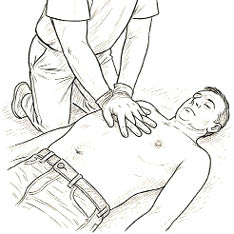

183
3.2.3. Wykorzystanie AED
Jeśli w pobliżu znajdują się inne osoby, warto poprosić jedną z nich o odszukanie AED – urządzenie to powinno znajdować się w widocznym miejscu. Jeżeli nie wiemy, gdzie się znajduje, dyspozytor numeru alarmowego może udzielić nam tej informacji.3
Po otrzymaniu AED należy natychmiast je włączyć, a następnie przykleić elektrody do klatki piersiowej poszkodowanego zgodnie z graficznymi oznaczeniami na elektrodach. Jeśli na miejscu jest więcej niż jeden ratownik, jedna osoba kontynuuje RKO, a druga obsługuje defibrylator. Należy ściśle stosować się do komunikatów głosowych wydawanych przez AED. W momencie analizy rytmu serca lub polecenia naciśnięcia przycisku „wyładowanie”, należy bezwzględnie upewnić się, że nikt nie dotyka poszkodowanego. Jeżeli urządzenie uzna, że defibrylacja nie jest wskazana, należy natychmiast wznowić uciśnięcia klatki piersiowej. AED będzie cyklicznie analizować rytm serca i wydawać dalsze instrukcje, których trzeba bezwzględnie przestrzegać.3,4
Pamiętajmy, że AED to urządzenie w pełni zautomatyzowane i całkowicie bezpieczne dla osoby udzielającej pomocy – pod warunkiem stosowania się do jego poleceń.
AED – automatyczny defibrylator zewnętrzny
Pierwsza pomoc

Rycina III.3.1.
Resuscytacja krążeniowo-
-oddechowa